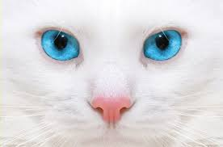
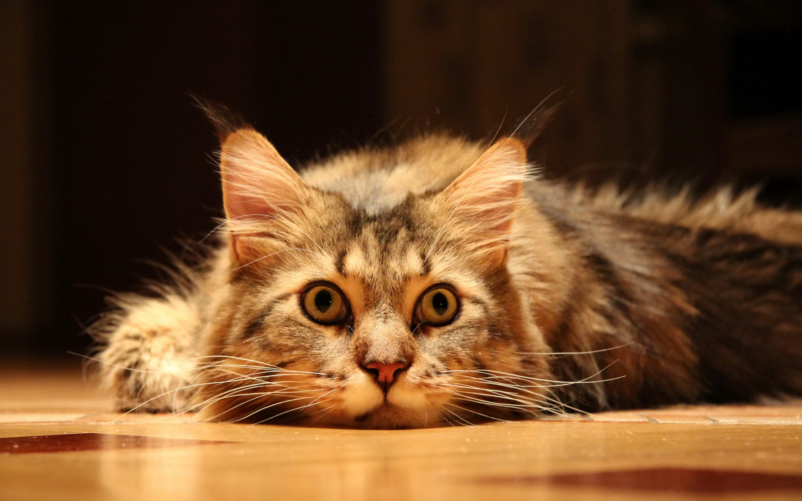
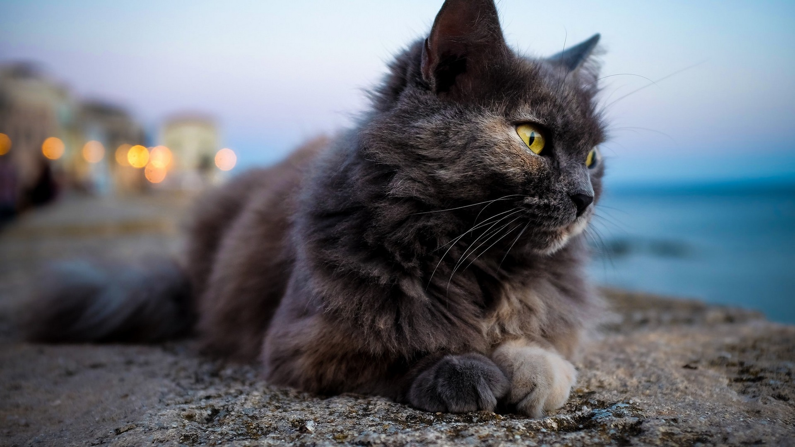
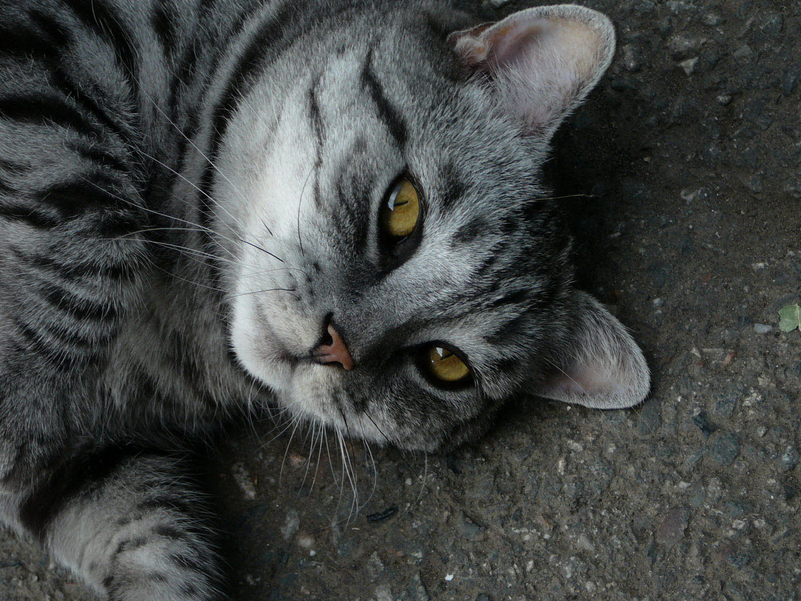
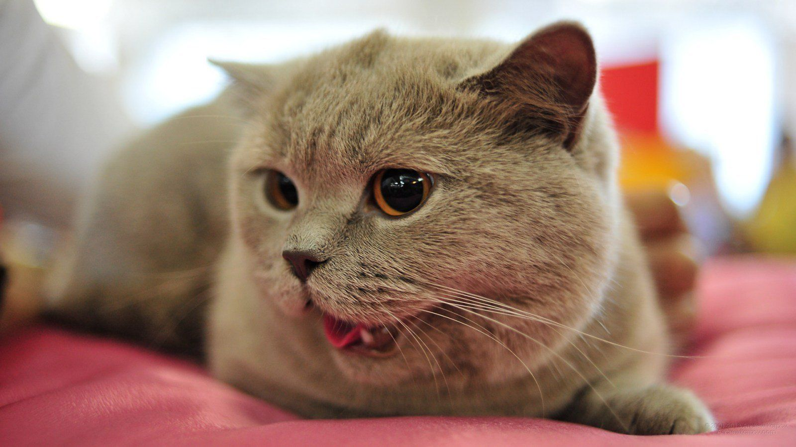
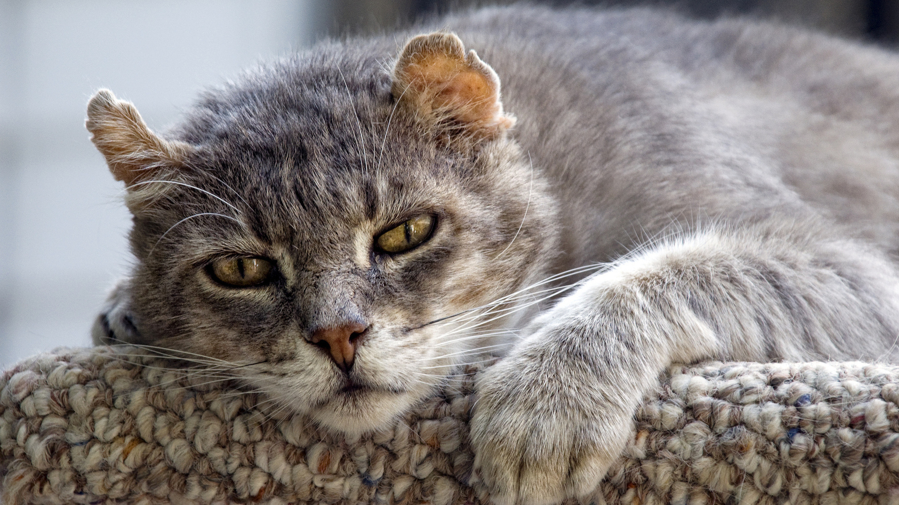
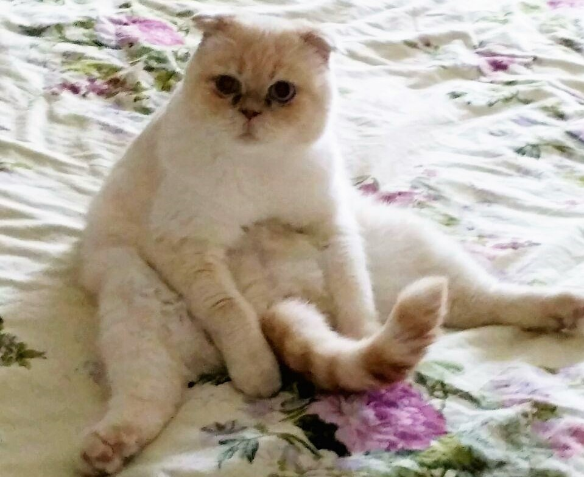
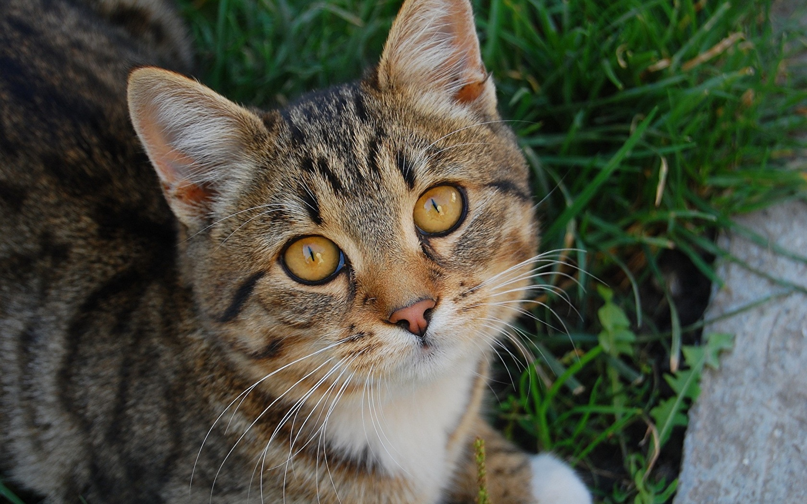
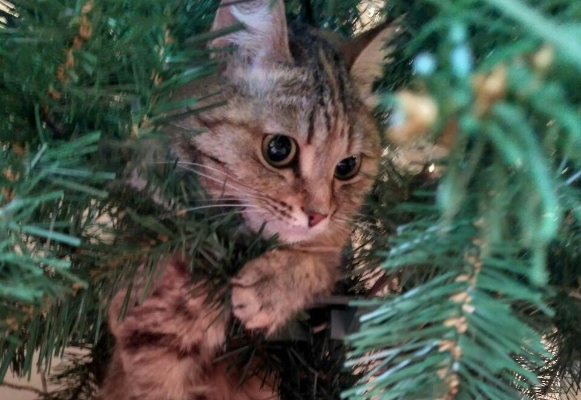

Иван
Возраст: около 23 лет
Порода: каменский хохлатый
Болезни: нет
Статус: в активном поиске
Он очень любит спать. Он очень пушистый, не кусается, не царапается. Он очень
старый и добрый. У него синии глаза и курносый нос. Летом он отдыхает в деревне.
В дом заходит только поесть.

Кектор
Возраст: около 1 года
Порода: Кекторский
Болезни: нет
Статус: Не известен
Очень любит бегать за вектором, стоит брать их вместе. Не могут друг без друга

Мика
Возраст: около 4 лет
Порода: Восточная
Болезни: Нет
Статус: На море
Она красивая, шерсть у неё серо-белая, она очень любит играть с пушистой собачкой,
с клубком бумаги.но больше всего она любит играть палочкой-пушистик. Она очень много-любит

Шарк
Возраст: около 5 лет
Порода: Добрая-светлая
Болезни: Нет
Статус: На полу
Вот если нужно успокоится и просто почилить. Этот кот сделает это за вас.

Вика
Возраст: около 5 лет
Порода: Девон рекс
Болезни: Нет
Статус: В ожидании приключений
Если любите бегать по утром, то этот кот полетит с вами..

Вектор
Возраст: около 2 лет
Порода: Векторский
Болезни: Боязнь направления
Статус: ждет хозяйку
Первое знакомство с таким котом поразит вас истинной британской сдержанностью.
Однако при более близком знакомстве вы сами не заметите, как питомец станет по-настоящему
любящим и преданным.

Байт
Возраст: около 3 лет
Порода: Белый волк
Болезни: Нет
Статус: на охоте
Смелый и отважный, уверен в своих силах никогда не отсупает.

Лол
Возраст: около 7 лет
Порода: Норшерский
Болезни: Нет
Статус: дома
Очень веселый, но в тоже время и спокойный. Он не устраивает в доме неразбериху,
как это делают иные животные.

Кек
Возраст: около 5 лет
Порода: Верховушка-веснушка
Болезни: страх китов
Статус: нуждается в ласке
У этой кошки мускулистое тело и сильные лапы, созданные для охоты. Дружелюбная и
неприхотливая.

Буся
Возраст: около 4 лет
Порода: Породистая дворняшка
Болезни: нет
Статус: у любящих хозяев
Всегда ласкается, но очень гордая, нужно завоевать доверие